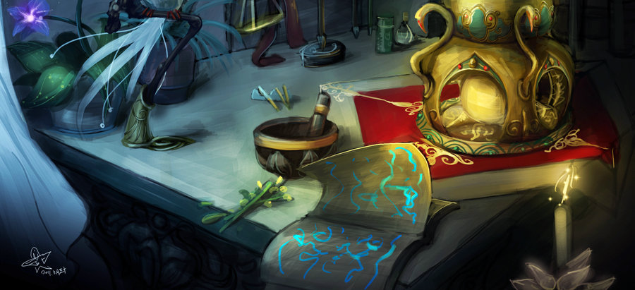
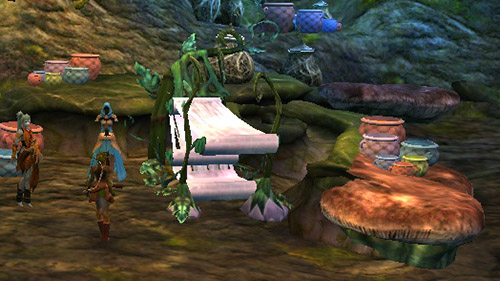
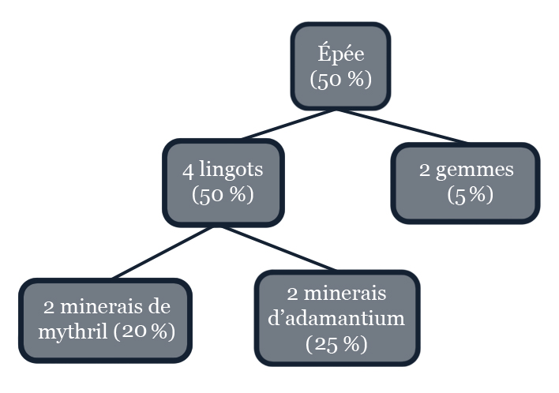

Craft, alchimie et autres créations d'objets
L'article original est écrit par Lothindil publié par Jeux de Lothi (décembre 2012).
En tant que grande joueuse et conceptrice de jeux, j'essaye régulièrement d'analyser en profondeur les mécanismes de certains jeux. En ce moment, je joue surtout à deux jeux : Dragon Age : Origins et Guild Wars. Ces deux RPG, bien que très différents dans leur concept et leurs conceptions, possèdent cependant un mécanisme commun, que j'ai retrouvé dans de nombreuses autres productions, y compris amateurs : le crafting ou alchimie.

Le terme anglais (crafting) a l'avantage d'être plus complet, car il parle de toutes les formes roleplay de transformation ou de création d'objets. Il n'y a pas d'équivalent direct en français : on pourrait parler de « forge », « herboristerie » ou encore « alchimie ». Mais ces termes ajoutent une nuance plus précise qui n'existe pas dans le terme « crafting ». N'étant pas fan de l'anglais dans mes jeux, j'ai décidé d'adopter le terme « alchimie », à défaut de mieux. Il apporte un coté fantastique.
Quelques définitions.
L’alchimie, ou mélange d’ingrédients, se retrouve dans pas mal de jeux vidéos et de MMORPG. Citons en vrac Guild Wars (1 et 2), Aion, World of Warcraft, Oblivion, Morrowind et autres Minecraft (pour ne citer que quelques-uns des plus connus).
Le principe est simple : prendre un ou plusieurs objets (ressources) pour en faire un ou plusieurs autres objets. Les noms varient beaucoup, dépendant partiellement des contraintes : forge, métiers, professions (ce qui entraine des confusions avec les classes; profession en anglais), etc.
Maintenant, quand on est game designer et qu’on travaille sur l’alchimie, un certain nombre de questions se pose. On retrouve d’ailleurs ces choix à travers les différents jeux que j'ai cités plus haut.
Dans la suite, pour simplifier, nous nommerons « ingrédients » les produits de base nécessaires à la réalisation d'une formule et « produits » les produits issues de l’alchimie. Notons qu’un produit peut être un ingrédient s’il est à son tour utilisé dans une recette. Nous parlerons alors de « ressources secondaires ».
« Quoi ? » : La valeur ajoutée.
C’est sans doute la question essentielle à se poser AVANT toutes les autres questions, car les choix que vous ferez plus tard dépendent partiellement de la réponse que vous apportez à cette question.
Le « quoi ? » pose la question de l'intérêt qu’aura le joueur à pratiquer l’alchimie. Quelle sera la valeur ajoutée du produit final par rapport aux produits de base ? L’équation est cependant plus complexe que « cout en pièces d’or du produit > cout en pièces d’or des ingrédients ». Il faut en effet mettre dans la balance toutes les contraintes nécessaires pour faire l’alchimie (recettes, rareté des ingrédients, possibilités de pratiquer, possibilité d’échec, ingrédients qui sont des ressources secondaires, etc.) ainsi que la rareté du produit fini (un produit fini impossible à trouver autrement dans le jeu aura une valeur ajoutée bien plus importante qu’un objet qu'on peut acheter dans une boutique en ayant dix niveaux de plus).
Il est nécessaire donc de répondre aux questions suivantes avant de passer à la suite :
- Quels types d’objets seront réalisables avec l’alchimie (consommables, équipements, ressources à haute valeur ajoutée, etc.) ?
- Les produits de l’alchimie sont-ils des produits uniques/rares/achetables avec de l’argent réel ?
Bref, quelle est la valeur du produit ?
Plus la valeur d'un produit est grande, plus les contraintes pour le fabriquer peuvent être fortes. Notons que dans un jeu multijoueur, les contraintes rajoutent encore de la valeur ajoutée à un produit accessible uniquement via l’alchimie. En effet, plus ces contraintes sont fortes, plus il sera rare et donc plus sa valeur sera forte.
Prenons deux exemples fort différents : dans Aion, les métiers permettent à haut niveau de créer des objets à très forte valeur ajoutée (équipements rares supérieurs à ce qu’on trouve normalement dans le jeu), mais les contraintes sont très nombreuses et très lourdes.
A l’inverse, dans Oblivion, l’alchimie permet de créer uniquement des potions à valeur ajoutée réduite (consommables dont on trouve des exemplaires en magasin ou sur des monstres), mais les contraintes sont assez rares et assez faibles.
Les différentes contraintes.
Où ?
Où le joueur va-t-il pouvoir faire l’alchimie ? Il existe globalement deux réponses : « quelque part » ou « n’importe où ».
Dans le premier cas, le PJ va devoir trouver l’endroit où il peut faire son alchimie. Généralement, cela se fait dans des ateliers dans les villes principales. C’est le cas de jeux comme Aion ou Guild Wars 2.

Dans le second cas, le joueur va pouvoir faire ça au cours de ses séquences d'exploration. C’est le cas dans Oblivion.
Notons que la contrainte de lieu devient d’autant plus importante que le sac est limité en taille et que les explorations du PJ le conduisent loin de la ville. Ainsi, forcer un joueur à retourner en ville pour faire de l’alchimie tout en limitant son sac à 40 objets (identiques ou différents) a toutes les chances de le dégouter et de le pousser à l’abandon très rapidement. A l’inverse, si l’exploration se passe toujours dans un rayon court autour de la ville (ou mieux s’il y a moyen de revenir en ville quand on veut très facilement) revient quasiment à permettre au joueur de pratiquer n’importe où.
L’origine des ingrédients.
Globalement, la contrainte de l’origine des ingrédients se base sur plusieurs paramètres :
- Leur accessibilité : le problème ici est de savoir où l'on peut obtenir l’objet. Si c’est « partout », ça sera forcément moins contraignant que « dans la dernière caverne du donjon de Raslabeurk qui est à une semaine de marche du dernier village ».
- Leur valeur monétaire : ceci a été évoqué plus haut. Forcément, plus un objet vaut cher, plus il sera considéré comme « contraignant ».
- La quantité disponible : un objet disponible en illimité chez un PNJ (fût-il au bout du monde) sera forcément moins contraignant que celui qui n’existe qu’en dix exemplaires dans tout le jeu (fût-il dans le sac à dos dès le départ).
- La facilité d’obtention : l’herbe que l’on peut arracher à mains nues avec un taux de réussite de 100 % sera forcément moins contraignante à obtenir que l'herbe magique qu’on doit récolter à la serpe d’or avec 2 % de taux de réussite. Dans le même genre, la fourrure miteuse qu’on a 75 % de chances d'attraper sur un lapin de niveau 1 sera nettement moins contraignante que l’écaille de dragon qu’on ramasse une fois sur cinq sur le cadavre d'un dragon de niveau 150.
Le matériel.
Il est ici question d’un matériel fixe, par exemple une pièce d’équipement ou un objet qui doit rester dans l’inventaire pour pratiquer l’alchimie. La question de ce matériel va souvent de pair avec la question « où » posée plus haut. Il est en effet rare qu’on impose à la fois un endroit où aller et un équipement à porter. Dans Oblivion par exemple, on impose pour faire de l’alchimie d’avoir au minimum un pilon.
Les contraintes porteront pour l’essentiel sur :
- La difficulté d'obtenir l’objet en question : plus l’objet sera difficile à obtenir, que ça soit pour des raisons financières ou parce qu’il est caché dans un coin, plus la contrainte sera forte.
- L’usure du matériel : un matériel qui s’use sera plus contraignant qu’un inusable et d’autant plus contraignant que son usure est rapide. Cette contrainte peut au besoin être baissée en autorisant le joueur à avoir plusieurs exemplaires de l’objet ou à le réparer.
- L’encombrement du matériel : dans un jeu où le moindre emplacement dans l'inventaire compte (je pense à un sac fait comme dans Diablo), transporter le matériel sera en soi une contrainte importante. Plus la place disponible est grande et moins l’objet est encombrant, plus la contrainte est faible. Dans Oblivion, l’objet de base prend très peu de place.
- L’adaptation du matériel au produit : nous y reviendrons dans la partie suivante.
Différents « types » d’alchimie : les métiers.
Voilà une contrainte plus subtile qui, mal utilisée, peut s’avérer totalement inutile ou, au contraire, trop efficace au point de rendre l’alchimie inutilisable.
L'idée est de diviser l’alchimie en différentes activités, en fonction des produits généralement. La plupart des jeux qui l’appliquent utilisent un principe de métiers en distinguant la forge, la couture, la cuisine, etc.
L’erreur de base, qui rend la contrainte complètement inutile, est de permettre aux joueurs d'exercer tous les métiers. En effet, s’ils peuvent tout faire, pourquoi ne pas leur permettre directement d’avoir accès à tout, sous un seul nom ? Ou utiliser ces distinctions pour améliorer l'ergonomie sans influencer le gameplay ?
L’erreur inverse, qui peut rendre l’alchimie inutilisable, est de restreindre drastiquement l’utilisation d’un métier à certains joueurs. Pour peu que le jeu compte peu d’actifs (chose qui sur la toile arrive bien plus souvent qu’on ne le croit), il peut très bien arriver que certains métiers soient inexistants. Ce qui rend leurs produits très rares… Imaginez maintenant que le métier en question produise entre autres des ressources secondaires pour d’autres métiers. Même avec de nombreux actifs, si le métier possède des limitations trop fortes (typiquement les métiers payables en argent réel ou demandant d'avoir un très haut niveau), le problème peut se produire. J’ai croisé cette erreur dans de nombreux jeux amateurs et semi-amateurs qui comptaient sur des milliers d’actifs…
Cette contrainte est souvent renforcée par deux autres : la présence d’un matériel propre au métier (dans Allods par exemple, il est nécessaire d’acheter une ceinture correspondant à son métier) et le niveau (sur lequel nous allons enchainer).
Les niveaux de métiers.
Le principe est simple : comme pour les niveaux du personnage, à chaque fois que vous réussissez une action, vous gagnez de l'XP. Au bout d’un certain seuil d’expérience, vous gagnez un niveau. Il existe d'autre systèmes sans niveau, où les points servent à être dépensés pour acheter des recettes. Les contraintes sont similaires aux deux systèmes.
C'est évident : plus il faut d’expérience, plus la contrainte est forte.
C’est au game designer pour l’essentiel de bien calibrer la difficulté. Pour gagner de l'expérience, il faut des ingrédients ; pour réunir des ingrédients, généralement, il faut farmer. Et tout le monde n’aime pas forcément farmer durant des heures et des heures, sans autre but que de monter son niveau de métier. Il est donc essentiel de bien doser la difficulté de gagner des niveaux (de manière à ce que les objets haut niveau restent proportionnellement rares), la quantité de production nécessaire pour atteindre ce niveau (si un PJ doit produire 50 fois la même armure pour atteindre le niveau nécessaire à l’armure suivante, il sera tenté de vendre — et donc de mettre sur le marché — les 49 armures inutiles, rendant l’objet nettement moins rare et attrayant) et la puissance de l’objet acquis au niveau supérieur.
Il existe plusieurs façons de gérer cette montée de niveau. Certains poussent au coopératif (le joueur qui va monter son métier ne pourra pour ainsi dire pas le faire seul et donnera l’équipement excédentaire à ceux l’ayant aidé). Cette solution est attrayante à première vue, mais méfiez-vous, la réalité est souvent autre et les « récolteurs » sont souvent lésés et finissent dégoutés par les métiers. De surcroit, le problème du nombre d'actifs se pose à nouveau. S'il faut 50 armures pour grimper de niveau, et qu'on veut éviter l'arrivée des armures sur le marché, c'est donc qu'il faut 49 récolteurs derrière 1 créateur. A moins d'avoir un jeu à plusieurs milliers de joueurs, c'est pratiquement intenable, que ce soit pour le fabricant qui va galérer à trouver ses ressources ou pour les récolteurs qui parfois devront attendre les 48 précédentes armures pour avoir la leur…
D’autres jeux permettent de monter de niveau sans produire des objets qui iront sur le marché. C'est le cas d'Aion par exemple, qui propose un système de commande. Le PNJ demande un certain nombre d’objets, fournit une partie des ressources et rémunère le joueur en expérience de métier.
Le taux de réussite.
Dans certains jeux, nous trouvons un taux de réussite des produits, taux qui peut dépendre ou non du niveau du métiers. Nous ne nous étendrons pas sur cette contrainte car elle est vraiment simple à comprendre : plus le taux de réussite est fort, plus la contrainte est faible. Un taux de 100% rend cette contrainte nulle.
Sachez juste que cette contrainte est démultipliée pour peu que la majorité des recettes produisant des objets à hautes valeurs ajoutées demandent des ressources secondaires. En effet, les taux d’échecs vont s’additionner et ainsi augmenter sensiblement la consommation de ressources et donc faire grimper la contrainte.
Un petit calcul simple pour vous donner une idée du chiffrage. On raisonne ici en moyenne, et n'oublions pas qu'avec un peu de malchance, certains joueurs vont galérer beaucoup plus que ça.

Soit une recette permettant de fabriquer « l'épée de la mort qui tue » (taux de réussite à 50%), qui demande 4 lingots d'alliage mythril-adamantium et deux gemmes rouges. L'alliage de mythril-adamantium est issue d'une recette (taux de réussite à 50%) réclamant 2 minerais de mythril (taux de réussite à la récolte à 20%) et 1 minerai d'adamantium (taux de réussite à 25%). La gemme rouge est issue d'un drop à 5% sur un monstre.
Pour 1 gemme, il faudra en moyenne tuer 20 monstres.
Pour 1 minerai de mythril, il faudra en moyenne récolter 5 fois. Pour 1 minerai d'adamantium, il faudra en moyenne récolter 4 fois. Pour 1 lingot d'alliage, il faut en moyenne 4 minerais de mythril et 2 minerais d'adamantium (on rate une fois sur deux), soit 20 récoltes de mythril et 8 récoltes d'adamantium.
Pour l'épée enfin, on rate 1 fois sur 2, il nous faut donc 8 lingots d'alliage et 4 gemmes, soit 160 récoltes de mythril, 64 récoltes d'adamantium et 80 monstres.
Vous voyez à quel point tous les taux de réussite (ou plutôt tous les taux d'échecs) se cumulent très rapidement. Sur des jeux où les actions sont limitées par jour, la contrainte se fait encore plus sentir (idem sur les jeux où il faut par exemple attendre une heure pour forger ledit « équipement de la mort qui tue »).
La quantité d’ingrédients.
C’est une des contraintes les plus importantes et, malheureusement, l'une des plus souvent négligées.
En elle-même, la contrainte est simple : plus il faut d’ingrédients (que ce soit en diversité ou en quantité), plus la contrainte est forte.
Cependant, elle est rarement bien évaluée. Plus de la moitié des jeux auxquels j’ai joué avec un système d’alchimie proposaient un système décourageant et démotivant, simplement à cause de la quantité.
L’exemple-type est celui du jeu où pour faire une potion, on vous demande 10 champignons, 5 eaux et 13 fioles vides. A partir du moment où le PJ risque de se prendre des dégâts sur le temps de la récolte des 10 champignons et des 5 eaux, les potions devront rapporter plus de PV que la quantité de dégâts maximale lors de la récolte. C’est idiot, mais c’est rare, très rare. À tel point que les level designers créent des quêtes nécessitant les produits de la recette pour justifier l’existence même de cette recette (c’est une erreur classique que j’ai moi-même faite).
Dans le même genre, il y a les armures qui demandent 500 ressources de 4 types (pour un total de 5000 à 6000 monstres). « Oui, mais il suffit de coopérer ». Ne rêvez pas, mesdames et messieurs les game designers. A part quelques guildes super-organisées, ça ne se passe jamais comme ça et ça dégoute généralement le créateur des objets — qui passe finalement tout son temps à farmer pour tenter de monter son métier pour obtenir l’armure du niveau haut dessus — et les récolteurs (qui n’obtiennent que rarement leur armure).
Dans les jeux à un seul joueur, c'est encore pire, vu que la coopération n'existe pas. Monter son métier va prendre du temps, beaucoup de temps, souvent trop de temps pour être intéressant. À l’inverse, il y a les quantités trop faibles cumulées à des ingrédients très faciles d’accès et très disponibles, qui créent une contrainte nulle.
Les recettes.
C’est la dernière grande contrainte : la façon dont on crée le produit.
Il existe globalement trois grandes écoles :
- Les ingrédients sont associés en fonction d’une caractéristique commune (dans Oblivion, les ingrédients doivent être liés par un même effet).
- Les ingrédients doivent entrer dans une recette (connue ou non), leur ordre est généralement sans importance.
- Les ingrédients doivent entrer dans une matrice, leur ordre a une importance et détermine la nature de l'objet (c’est le système de Minecraft).
Bien sûr, chaque école a ses propres contraintes.
Dans le premier système, la contrainte dépendra essentiellement de la rareté de l’effet associé à l’ingrédient. Plus l’ingrédient peut être associé à d'autres ingrédients, moins la contrainte est forte.
Dans le deuxième système, tout dépend de la façon d’obtenir une recette. Si elles sont données, la contrainte est réduite ; s’il faut les obtenir au bout de longues quêtes, la contrainte sera plus forte ; s’il faut la deviner, la contrainte peut devenir bloquante si rien n’est fait pour aider le joueur (indiquer le nombre de recettes faisables, le nombres d’ingrédients, etc.).
À titre d'exemple, le système d’alchimie de Heroes’ Chronicles tenait de l’impossible quand j’y ai joué (il y a quelques années déjà, le système a peut-être changé depuis). Trente plantes, cinq emplacements maximum (il existait des recettes à 2, 3, 4 et 5 ingrédients), possibilité de devoir utiliser plusieurs fois la même plante, aucune aide. Les ingrédients étaient perdus en cas d’échec. Pour vous donner une idée, ça fait quand même quelques 25 137 900 (302+303+304+305) combinaisons possibles. Là-dessus, il devait y avoir 1000 ou 2000 combinaisons gagnantes. Autant dire que le système pouvait éventuellement intéresser les hardcore gamers, mais dégoutait très rapidement tous les autres qui se hâtaient de fouiller le net à la recherche de la solution…
Le troisième système est très proche du deuxième. Il s’agit en réalité d’un système dérivé où la recette a l’avantage d’être visuelle, ce qui constitue une aide en soi, mais complexifie le problème en augmentant la quantité d’ingrédients possibles.
Conclusion.
Encore une fois en matière de game design et de level design, la création d’objets n’est jamais qu’une question d’équilibre.
Cet équilibre joue en réalité sur deux variables :
- Le produit : où l’équilibre se fera entre l'« inutile » (objet — trop — courant, accessible plus facilement par d'autres moyens, etc. ) et le « cheaté » (objet nettement plus puissant que tout ce qu’on peut obtenir par d'autres moyens, objet surpassant les objets achetés avec de l’argent réel, etc.).
- Les contraintes de production : où l’équilibre se fera entre le « trop simple/trop rapide » (contraintes quasiment nulles) et le « trop complexe/trop aléatoire/trop long » (contraintes trop fortes).
Et enfin, l’équilibre d’interaction entre ces deux variables, la comparaison entre le produit et les contraintes qui ont permis de le réaliser (toujours l’histoire de la potion de soin coutant plus de PV qu’elle n’en rapporte).
Ajouter un commentaire
Commentaires

Salutations !
Tout d'abord, belle écriture. Ensuite, cet article rejoint vraiment ma manière de penser ! J'ai récemment ouvert un blog sur le game design, et je m'atèle à faire des analyses de systèmes etc. afin de comprendre, et faire comprendre les intérêts d'un jeu à l'autre.
Pour en revenir au sujet, le "crafting" dans un jeu est souvent utilisé comme une sorte d'objectif secondaire, rallongeant ainsi la durée de vie d'un jeu. De plus, ce système (que l'on retrouve généralement dans les jeux online) amène les PJs à investir économiquement dans leurs métiers, mais aussi à pouvoir s'enrichir. Le fait que les PJs puissent posséder les mêmes métiers que leurs compagnons fait intervenir la notion de compétitivité, et les joueurs se retrouvent ainsi à jouer des heures et des heures, dans le seul but de faire mieux que son voisin ! :)

Bonjour !
Un article intéressant, comme d'habitude ; même pour moi qui ne suis pas du tout dans le game design, je trouve toujours matière à réflexion sur ce site !
Une petite remarque cependant : "crafting" se traduit tout simplement par… "artisanat". Je ne crois pas que la notion d'herboristerie ait quoi que ce soit à voir avec ce terme :)
Encore un bon article pour orienter les games designers débutants (et pourquoi pas professionnels), merci beaucoup !
J'aime beaucoup ce genre d'article ! Super ! Merci a vous !